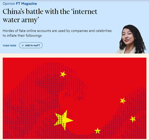

Trainees Edition
Trainers Edition
Trainees Edition
Trainers Edition
4.nodarbība: Interneta un sociālo mediju loma informācijas traucējumu radīšanā
Nodarbības apraksts
Šīs nodarbības galvenais mērķis ir izskaidrot interneta un sociālo mediju lomu informācijas piesārņojuma radīšanā un tiešsaistes lietotāju uzticamībā.
Nodarbības sekundārais mērķis ir sniegt vadlīnijas pasniedzējiem, kuri vēlas izmantot nodarbības saturu, lai mācītu savus studentus.
Ņemot vērā šos mērķus, tiek prezentēta interneta un sociālo mediju ietekme uz informācijas piesārņojumu, kā arī norādījumi par mācību priekšmeta pasniegšanu.
Studenti, kuri būs sekmīgi apguvuši šo nodarbību, spēs:
- izprast interneta un sociālo mediju lomu informācijas piesārņojuma veidošanā;
- atpazīt tiešsaistes lietotāju uzticamību;
- atpazīt neautentisku tiešsaistes uzvedību;
- definēt un atšķirt troļļus, botus un kiborgus;
- izprast neautentisku tiešsaistes darbību motivāciju.
Pasniedzēji, kuri būs sekmīgi apguvuši šo nodaļu, spēs izprast kā mācīt par interneta un sociālo mediju lomu informācijas piesārņojuma radīšanā un tiešsaistes lietotāju uzticamību.
Nodarbības struktūra
Nodarbība sastāv no šādām daļām:
- nodarbības apraksts (mērķi, satura izklāsts un mācību rezultāti),
- nodarbības struktūra;
- vadlīnijas studentiem;
- vadlīnijas pasniedzējiem (kā sagatavoties; izmantojamās metodes; ieteikumi);
- saturs (mācību materiāli un vingrinājumi);
- tests;
- informācijas resursi (izmantotie avoti, ieteicamie avoti un video).
Galvenie nodarbības mērķi, satura izklāsts un mācību rezultāti ir raksturoti nodaļas apraksta daļā. Saturs ietver visus mācību materiālus un ar to saistītos uzdevumus. Tests sastāv no jautājumiem ar atbilžu variantiem, tas palīdzēs studentiem novērtēt savu progresu. Avoti sastāv no izmantotājiem avotiem un ieteicamajiem avotiem tālākai pētniecībai. Izmantotie avoti ir to materiālu saraksts, kas tikusi izmantoti mācību materiāla sagatavošanā. Ieteicamie avoti sastāv no papildu avotiem un video, kas ir ļoti ieteicami, lai uzzinātu vairāk par nodaļas tematu. Vadlīnijas studentiem iekļauj instrukcijas un ieteikumus studentiem. Vadlīnijas pasniedzējiem palīdz pasniedzējiem dažādās mācību procesa fāzēs un sniedz noderīgus ieteikumus.
Vadlīnijas studentiem
Studentiem jāizlasa teksts, jānoskatās rekomendētie video un jāizpilda vingrinājumi. Vēlams ieskatīties ieteicamajos avotos, lai uzzinātu vairāk par tematu. Pēc iepazīšanās ar nodarbības saturu, ieteicam veikt testu, lai novērtētu savu progresu. Ja nepieciešams pārskatīt mācību materiālu vēlreiz.
Vadlīnijas pasniedzējiem
Vadlīnijas pasniedzējiem ietver ieteikumus un padomus, kā izmantot šīs nodarbības saturu mācību procesā.
Sagatavošanās
Ieteicams sagatavot prezentāciju (PowerPoint/Prezi/Canva) par nodaļas tēmu, kas papildināta ar vizuāliem materiāliem (attēli un videoklipi) un uzskatāmiem piemēriem. Ieteicams arī pielāgot šīs nodaļas piemērus un vingrinājumus, lai tie ir piemēroti mērķauditorijai. Vietējo piemēru izvēle (konkrētā valstī) saistībā ar pašreizējām vai labi zināmām problēmām palīdz skaidrāk ilustrēt jautājumu. Tas arī palīdz pievērst studentu uzmanību. Jo pazīstamāki un populārāki būs piemēri, jo labāk tiks nodots vēstījums. Vietējās (valsts) faktu pārbaudes platformas var būt labs avots to ziņu vai gadījumu izpētei, kas jau ir pārbaudītas un marķētas.
Nodarbības uzsākšana
Studentu iesaistīšanai var noderēt īss tests (3–5 jautājumi), izmantojot platformu Kahoot, vai atsevišķu jautājumu uzdošana, izmantojot Mentimeter. Jautājumi var kalpot gan kā motivējošs instruments, gan kā rīks, ar kura palīdzību iespējams apzināt studentu esošās zināšanas un izpratni par nodarbības tēmu.
Daži jautājumu piemēri: Kas ir trollis? Kas ir bots?
Izmantojamās metodes
Mācību procesā var tikt izmantotas dažādas metodes, piemēram:
- Lekcija
- Diskusija
- Darbs grupās
- Pašrefleksija
Ieteikumi pasniedzējiem
Iesildīšanās
Lai efektīvi iesaistītu dalībniekus mācību procesā un vienotos par to, kas tiks apgūts nodarbības laikā, tās sākumā var iesildošus uzdot jautājumus par tematu interneta un sociālo mediju loma informācijas piesārņojuma radīšanā. Tas var tikt organizēts kā grupu darbs, lūdzot studentiem apkopot un pārrunāt idejas, vai arī individuāli, aicinot katru dalībnieku uzrakstīt savas idejas uz līmlapiņas.
Aktivitātes soļi:
- Pajautājiet praktikantiem, vai viņi kādreiz ir saskārušies ar neautentiskām darbībām sociālajos medijos. Kāpēc viņi domā, ka tas nebija autentisks?
- Aiciniet praktikantus klasificēt dotos piemērus un paskaidrot, ar ko tie atšķiras.
Nodarbības mērķa paskaidrošana
Nodarbības mērķim ir jābūt skaidram, šajā gadījumā tas ir informēt par informācijas piesārņojuma cēloni un sekām. Pēc iesildošajiem jautājumiem būs vieglāk izskaidrot nodarbības mērķi.
Nodarbības satura izklāsts
Izklāstot nodarbības saturu, noteikti komunicējiet ar studentiem un mudiniet viņus aktīvi iesaistīties.
- Pirms sniedzat troļļu, robotu un kiborgu definīcijas, palūdziet studentiem izdomāt savu.
- Iepazīstinot ar izplatītām neautentisku darbību un kontu formām, lūdziet dalībniekus sniegt reālas dzīves piemērus. Komentējiet piemērus neatkarīgi no tā, vai tie pieder kategorijai, par kuru runājat.
- Izvēlieties reālās pasaules piemērus un iegūstiet pēc iespējas vairāk informācijas par konkrēto gadījumu. Lai pēc studentu lūguma jūs varētu paskaidrot sīkāk.
- Izvēloties piemērus, pārliecinieties, ka tie pilnībā atbilst tās kategorijas definīcijai, par kuru tiek runāts.
- Kad vien iespējams, ļaujiet studentiem darboties praktiski.
Noslēgums
Sniedziet nodarbības kopsavilkumu un uzdodiet dažus jautājumus, kas palīdzētu izcelt būtiskāko satura izklāstā.
Sekojošais jautājums var palīdzēt:
- Pajautājiet praktikantiem, kā viņi reaģētu, ja viņiem būtu aizdomas par neautentisku darbību.
Nodarbības noslēgumā pārliecinieties, vai studenti saprot, ka aiz neautentiskām darbībām slēpjas viltus lietotāju konti un slēpti mērķi (galvenokārt manipulācijas) sociālajos medijos.
Saturs: Interneta un sociālo mediju loma informācijas piesārņojuma radīšanā
Ievads
Gan interneta, gan sociālo mediju tehnoloģiju parādīšanās ir radījusi būtiskas izmaiņas informācijas veidošanā, paziņošanā un izplatīšanā. Plaši pieejami, lēti un izsmalcināti rediģēšanas un publicēšanas rīki un tehnoloģijas ir atvieglojušas satura izveidi un ātru informācijas apmaiņu. Līdz ar to šodien dezinformācija un misinformācija ir atradusi jaunu kanālu (Wardle & Derakhshan, 2017, 11-12 lpp.; Tandoc, Lim & Ling, 2018, 139. lpp.).
Mūsdienās ir mainījies ne tikai ziņu izplatīšanas veids, bet arī to izskats. Tvīts, kura garums nepārsniedz 280 rakstzīmes, tagad tiek uzskatīts par ziņu, un Twitter kļuva par īpašu platformu jaunāko ziņu ātrai izplatīšanai. Facebook ir vēl viena sociālo mediju platforma, kas ir kļuvusi par vietu, kur lietotāji veido, patērē un apmainās ar ziņām, kā arī personīgiem atjauninājumiem un fotoattēliem (Tandoc, Lim & Ling, 2018, 139. lpp.).
Visas tiešsaistes platformas, īpaši sociālie mediji, nodrošina iespēju nežurnālistiem sasniegt masu auditoriju, citiem vārdiem sakot, tās sniedz iespējas pilsoniskajai žurnālistikai. Mūsdienās nežurnālisti ir sākuši nodarboties ar žurnālistikas aktivitātēm (Robinson & DeShano, 2011, 965. lpp.). Viņi ievieto informāciju, fotoattēlus un video par jaunākajām ziņām, kurām ir bijuši liecinieki, savos sociālo mediju kontos (Jewitt, 2009, 231. lpp.).
Sociālie mediji veido mediju ainavu vairākos veidos. Pirmkārt, saturs no dažādiem avotiem tiek rādīts vienā vietā, lietotājiem vairs nav jāizvēlas ziņu avots; tā vietā viņi izvēlas pašu stāstu (Messing & Westwood, 2014, 1044. lpp.). Informācijas avots kļūst neskaidrs, jo ziņas/informācija ātri pārvietojas no vienas personas/kanāla uz citu (Tandoc, Lim & Ling, 2018, 139. lpp.). Otrkārt, satura atlasi nosaka apstiprinājumi un sociālie ieteikumi (Messing & Westwood, 2014, 1044. lpp.). Izplatīšanā liela nozīme ir popularitātei. Atzīmes “patīk”, kopīgošana vai komentāri izraisa turpmākas atzīmes “patīk”, kopīgošanu vai komentārus (Thorson, 2008, 475. lpp.).
Turklāt, atšķirībā no tradicionālajiem ziņu medijiem, manipulēta satura kopīgošanai sociālajos medijos nav ētikas kodeksa (Tandoc, Lim & Ling, 2018, 144.–145. lpp.). Informācijas pārbaude dažādos formātos, piemēram, fotoattēlos un videoklipos, sagādā grūtības, turklāt tam nepieciešamas zināšanas.
Misinformācija un dezinformācija pastāv jau pirms drukātās preses, taču internets ir ļāvis viltus ziņām, sazvērestības teorijām un pārspīlējumiem izplatīties ātrāk un tālāk nekā jebkad agrāk (Klepper, 2020. gada 7. februāris).
Tiešsaistes lietotāju uzticamība
Tiešsaistes kopienu lietotāju uzticamība ir vēl viena problēma (Ortega, Troyano, Cruz, Vallejo & Enriquez, 2012, 2884. lpp.). Visi instrumenti, kā arī talants tos izmantot, šodien ir nopērkami. Ikviens var iegādāties tūkstošiem sociālo mediju kontu vai miljoniem e-pasta adrešu un nolīgt rakstniekus vai publicētājus, kas palīdzēs masveidā izplatīt jebkuru vēstījumu vai ideoloģiju (Filloux, 2017).
Pastāv uzņēmumi un privātpersonas, kas par saprātīgām cenām atklāti pārdod Twitter, Facebook un YouTube sekotājus/abonentus un to iesaisti, retvītus un dalīšanos (Barojan, 2018. gada 5. novembris).

Sociālie mediji arvien vairāk tiek izmantoti, lai pastiprinātu nepatiesus apgalvojumus, kā arī polarizētu cilvēkus par strīdīgiem jautājumiem. Kiborgi, troļļi un boti veicina informācijas piesārņošanu tiešsaistē, piepildot internetu ar dezinformāciju (Klepper, 2020. gada 7. februāris).

Troļļi un troļļu fermas
Vārds “trollis” attiecināms uz personām, kuras tīši ierosina tiešsaistes konfliktus vai aizskar citus lietotājus uzmanības novēršanai vai, lai radītu šķelšanos tiešsaistes kopienā vai sociālajā tīklā, ievietojot tajā mulsinošus vai nesaistītus ierakstus (Barojan, 2018. gada 5. novembris; Wardle, 2018). Troļļu mērķis ir izprovocēt citus uz emocionālu reakciju un izjaukt diskusijas, dažreiz viņu pašu izklaidei un dažreiz koordinētas kampaņas ietvaros (Klepper, 2020. gada 7. februāris). Organizētu interneta troļļu grupu sauc par troļļu fermu jeb troļļu fabriku.
Troļļi dažreiz saņem samaksu par informācijas izplatīšanu. Tie var radīt būtisku (negatīvu/pozitīvu) ietekmi uz tiešsaistes kopienām (Chen, Wu, Srinivasan & Zhang, 2013). Šādi veidota propaganda bieži vien ir balstīta faktos, taču ietver neobjektivitāti, kas veicina konkrētu viedokli, perspektīvu vai reklamē produktu. Šādas ziņu un komentāru sajaukšanas mērķis bieži ir pārliecināt, nevis informēt (Tandoc, Lim & Ling, 2018, 147. lpp.).
Piemēram, Interneta ūdens armija (Internet Water Army) no Ķīnas ir grupa, kurai maksā par tiešsaistes komentāru ievietošanu internetā ar noteiktu. Šos cilvēkus pieņem darbā uzņēmumi, lai tiešsaistes platformās reklamētu pozitīvas ziņas par saviem produktiem un negatīvas ziņas par konkurentiem (Internet Water Army, 2020). Savukārt 50 centu partija/armija (50 Cent Party/Army) ir komentētāju grupa, ko Ķīnas varas iestādes nolīgušas, lai manipulētu ar sabiedrisko domu Ķīnas komunistiskās partijas labā. Hārvardas pētījuma rezultāti liecina, ka Ķīnas valdība katru gadu izveido aptuveni 448 miljonus sociālo mediju ierakstu (King, Pan & Roberts, 2017; 50 Cent Party, 2020).

Pēdējā laikā interneta troļļu izmantošana viedokļu manipulēšanai ir kļuvusi par ierastu praksi. Populārs troļļošanas veids ir strīdīgu komentāru rakstīšana no viltus profiliem par konkrētu tēmu. Mērķis ir par katru cenu uzvarēt strīdā, to parasti pavada neprecīza un maldinoša informācija (Mihaylov, Koychev, Georgiev & Nakov, 2015, 443. lpp.).
Piemērs: Bils Geitss - troļļu mērķis
Sociālo mediju uzbrukumi Bilam Geitsam (Bill Gates) pastiprinājās 2020.gada aprīlī pēc tam, kad viņš Instagram ievietoja video, kurā viņš pie loga izkāra zīmi “Paldies veselības aprūpes darbiniekiem”. Nākamo dienu laikā šis ieraksts saņēma simtiem tūkstošu komentāru, kas viņu saistīja ar dažādām sazvērestības teorijām, kas saistītas ar vakcīnām, Pasaules Veselības organizāciju (PVO) un implantētām mikroshēmām. Uzbrukumi pastiprinājās nākamajā nedēļā pēc tam, kad viņš kritizēja Trampa administrācijas lēmumu apturēt finansējumu PVO. 24 stundu laikā pēc Bila Geitsa komentāriem viņa Twitter kontu pieminēja vismaz 270 000 reižu, kas ir 30 reizes vairāk kā vidēji. Tie bija galvenokārt dusmīgi prezidenta Trampa atbalstītāji (Stronder, 2020. gada 21. maijs).
 |
  |
Piemērs: troļļi pirms mēģināja izraisīt nesaskaņas starp kanādiešiem 2017. gada vēlēšanām
Pētījumā, kas tika veikts no 2017. gada janvāra līdz februārim, izanalizējot 18 533 tvītus, atklājās, ka troļļi pirms 2017. gada vēlēšanām mēģināja izraisīt šķelšanos starp kanādiešiem. Pēc apšaudes Kvebekas mošejā 2017. gadā Twitter tika ievietotas viltus ziņas un islamofobiski paziņojumi (Rawi & Jiwani, 2019. gada 23. jūlijs).

Trollis atšķirībā no robota ir īsts lietotājs, savukārt robotprogrammatūra (boti) ir automatizēta. Troļļošana kā darbība neaprobežojas tikai ar troļļiem vien. Troļļi dažreiz izmanto arī robotprogrammatūras, lai pastiprinātu savus ziņojumus. Tādējādi botus var izmantot troļļošanas nolūkos (Barojan, 2018. gada 5. novembris).
Zeķu leļļu konti / Sock Puppet Accounts
Zeķu lelle ir viltus konta veids. Lai gan daži lietotāji izmanto anonīmus kontus, lai vienkārši izvairītos no sevis identificēšanas, zeķu leļļu kontu īpašnieki izmanto tos, lai uzbruktu kritiķiem vai slavētu sevi (Klepper, 2020. gada 7. februāris).
Piemērs: ASV senatora zeķu lelles konts
ASV Jūtas senators Mits Romnijs(Mitt Romney) atzina, ka viņam ir slepens Twitter konts ar nosaukumu “Pierre Delecto”, ko viņš izmantoja, lai aizstāvētu sevi pret kritiku (Kleper, 2020. gada 7. februāris).
 |
Boti un bottīkli
Bots ir automatizēts sociālo mediju konts, ko vada algoritms, nevis reāla persona. Citiem vārdiem sakot, robots ir paredzēts, lai izveidotu ziņas bez cilvēka iesaistes. Trīs galvenie botu indikatori ir anonimitāte, augsts aktivitātes līmenis un konkrētu lietotāju, tēmu vai mirkļbirku paplašināšana (Barojan, 2018. gada 5. novembris). Autentiski Twitter lietotāji bieži publicē ziņas dažas reizes dienā par dažādām tēmām, turpretī robotprogrammatūras tvītos simtiem reižu dienā un bieži vien tikai par konkrētu tēmu. Viņi, visticamāk, pārpublicēs saturu, nevis izveidos kaut ko oriģinālu (Klepper, 2020. gada 7. februāris). Boti var izmantot atsauces un publicēt saturu, kas galu galā var ietekmēt dažādu sociālo mediju platformu algoritmus (Stronder, 2020. gada 21. maijs).
Ja konts raksta atsevišķas ziņas un komentē, atbild vai kā citādi mijiedarbojas ar citu lietotāju ziņām, kontu nevar klasificēt kā robotu. Boti pārsvarā ir atrodami Twitter un citos sociālajos tīklos, kas ļauj lietotājiem izveidot vairākus kontus (Barojan, 2018. gada 5. novembris).
Dezinformācijas kampaņās botus var izmantot, lai pievērstu uzmanību maldinošiem stāstiem, lai pārpludinātu platformu tendenču sarakstus un radītu ilūziju par publisku diskusiju un atbalstu (Wardle, 2018). Dienvidkalifornijas universitātes pētnieku pētījumā tika analizēti ar ASV vēlēšanām saistīti tvīti, kas tika veikti 2016. gada septembrī un oktobrī, un konstatēts, ka vienu no katriem pieciem bija veicis bots (Klepper, February 7, 2020).
Piemērs: pandēmijas uzliesmojuma laikā aptuveni 45% tvītu sūtīja roboti
Pēc Kārnegija Melona universitātes pētnieku domām, gandrīz puse Twitter kontu, kas sociālo mediju platformā izplata ziņas par koronavīrusa pandēmiju, visticamāk, ir robotprogrammatūras. Pandēmijas uzliesmojuma sākumā pētnieki izpētīja vairāk kā 200 miljonus tvītu, kas apsprieda vīrusu un atklāja, ka aptuveni 45% no tiem tika nosūtīti no kontiem, kas vairāk uzvedas kā roboti. Pētnieki novēroja vairāk kā 100 neprecīzu COVID-19 stāstu veidus, piemēram, tādus, kas saistīti ar iespējamiem ārstēšanas veidiem. Boti arī dominēja sarunās par mājsēdes rīkojumu izbeigšanu un "Amerikas atvēršanu" (Young, 2020. gada 27. maijs).
 |
 |
Avots: Young, 2020. gada 27. maijs |
Botu tīkls ir robotu kontu tīkls, ko pārvalda viena un tā pati persona vai grupa. Personas, kas pārvalda robottīklus, kuriem pirms izvietošanas ir nepieciešama cilvēka sākotnējā palīdzība, sauc par robotu ganiem vai ganiem. Bottīkla mērķis ir panākt, lai mirkļbirka, lietotājs vai atslēgvārds izskatītos vairāk apspriests (pozitīvs vai negatīvs) vai populārs, nekā tas patiesībā ir. Boti ir vērsti uz sociālo mediju algoritmiem, lai ietekmētu tendenču sadaļu, kas savukārt pakļautu nenojaušām lietotāju sarunām, ko pastiprina robotprogrammatūra. Bottīkli reti vēršas pret cilvēkiem, un, kad tas tiek darīti, tie ir surogātpasta vai vispārīga viņu aizskaršana, nevis aktīvi mēģinājumi mainīt viņu viedokli vai politiskos uzskatus (Barojan, 2018. gada 5. novembris).
Piemērs: pirms Malaizijas vēlēšanām tika konstatētas botu darbības
Pirms vēlēšanām Malaizijā DFRLab (Digitālās kriminālistikas pētījumu laboratorija) atrada 22 000 robotprogrammu, kas visas izmantoja vienādu runas modeli. Katrs robots izmantoja divas mirkļbirkas, kas bija mērķētas uz opozīcijas koalīciju, kā arī atzīmēja 13–16 reālus lietotājus, lai mudinātu viņus iesaistīties sarunā (Barojan, 2018. gada 5. novembris).
Kiborgi
Kiborgs ir hibrīdkonts, kas apvieno robota nenogurdināmību un cilvēka smalkumu. Kiborga konti ir tie, kuros cilvēks periodiski pārņem robota kontu, lai atbildētu uz citiem lietotājiem un publicētu oriģinālo saturu. Tie ir dārgāki, un to darbība ir laikietilpīgāka, taču tos ir daudz grūtāk atklāt (Klepper, 2020. gada 7. februāris).
Vingrinājumi
Trollis ir īsts lietotājs, savukārt bots ir automatizēts. Botu vada algoritms, nevis reāla persona. Bots ir paredzēts, lai publicētu ziņas bez cilvēka iejaukšanās, savukārt kiborgs ir hibrīdkonts, kas apvieno robotu un reālu personu.
Tests
Izmantotie avoti
50 Cent Party. (2020). In Wikipedia.
Al-Rawi, A. & Jiwani, J. (July 23, 2019). Russian Twitter trolls stoke anti-immigrant lies ahead of Canadian election. The Conversation.
Barojan, D. (November 5, 2018). How to Identify Bots, Trolls, and Botnets. Global Investigative Network.
Benson, T. (April, 24, 2020). Trolls and bots are flooding social media with disinformation encouraging states to end quarantine. Insider.
Chen, C., Wu, K., Venkatesh, S. & Zhang, X. (2013). Battling the Internet Water Army: Detection of hidden paid posters. Proceedings of the 2013 IEEE/ACM International Conference on Advances in Social Networks Analysis and Mining. Niagara, Canada: ACM.
Feinberg, A. (October 20, 2019). This sure looks like Mitt Romney’s secret Twitter account (Update: It is): Meet “Pierre Delecto”. The Slate. https://slate.com/news-and-politics/2019/10/mitt-romney-has-a-secret-twitter-account-and-it-sure-looks-like-its-this-one.html
Filloux, F. (2017). You can’t sell news for what it costs to make. The Walkley Magazine on Medium.
Internet Water Army. (2020). In Wikipedia.
Jewitt, R. (2009). The trouble with twittering: Integrating social media into mainstream news. International Journal of Media & Cultural Politics, 5(3), 233–246. doi:10.1386/- macp.5.3.233_3
King, G., Pan, J. & Roberts, M. E. (2017). How the Chinese government fabricates Social Media posts for strategic distraction, not engaged argument. American Political Science Review, 111(3), 484-501. DOI: 10.1017/S0003055417000144
Klepper, D. (February 7, 2020). Cyborgs, trolls and bots: A guide to online misinformation.
Messing, S., & Westwood, S. J. (2014). Selective exposure in the age of social media: Endorsements trump partisan source affiliation when selecting news online. Communication Research, 41(8), 1042-1063.
Mihaylov, T., Koychev, I., Georgiev, G.D. & Nakov, P. (2015). Exposing paid opinion manipulation trolls. In: Proceedings of Recent Advances in Natural Language Processing (pp. 443–450), Hissar, Bulgaria, Sep 7–9 2015.
Ortega, F. J., Troyano, J., Cruz, F., Vallejo, C. & Enriquez, F. (2012). Propagation of trust and distrust for the detection of trolls in a social network. Computer Networks. 56. 2884-2895. 10.1016/j.comnet.2012.05.002.
Robinson, S., & DeShano, C. (2011). ‘Anyone can know’: Citizen journalism and the interpretive community of the mainstream press. Journalism, 12(8), 963–982. doi:10.1177/1464884911415973.
Seetharaman, D. (April 17, 2020). Bill Gates is targeted by Social-Media mobs. The Wall Street Journal.
Schlosser, K. (April 15, 2020). Bill Gates calls Trump’s freeze on WHO funding ‘dangerous’ and tweet draws a viral response. GeekWire.
Stronder (May 21, 2020). Fighting disinformation, trolls, and bots on social media during COVID-19.
Tandoc, E.C., Lim, Z. W. & Ling, R. (2018). Defining “fake news”. Digital Journalism, 6(2), 137-153. DOI: 10.1080/21670811.2017.1360143
Thorson, E. (2008). Changing patterns of news consumption and participation. Information, Communication and Society, 11(4), 473–489. doi:10.1080/13691180801999027.
Wardle, C. & Derakhshan, H. (2017). Information disorder: Toward an interdisciplinary framework for research and policymaking. The Council of Europe.
Wardle, C. (2018). The Essential Glossary.
Young, V. A. (May 27, 2020). Nearly half of the Twitter accounts discussing 'reopening America' may be bots. Carnegie Mellon University News.
Yang, Y. (August 1, 2018). China’s battle with the internet water army.
Ieteicamie avoti
Barojan, D. (November 5, 2018). How to Identify Bots, Trolls, and Botnets. Global Investigative Network. https://gijn.org/2018/11/05/how-to-identify-bots-trolls-and-botnets/
DFR Lab. (August 29, 2017). #BotSpot: Twelve Ways to Spot a Bot: Some tricks to identify fake Twitter accounts.
Klepper, D. (February 7, 2020). Cyborgs, trolls and bots: A guide to online misinformation.
Wild, J. & Godart, C. (2020). Spotting bots, cyborgs and inauthentic activity. In C. Silverman (Ed.). Verification Handbook for Disinformation and Media Manipulation, 3rd Ed. European Journalism Centre.
Zadrozny, B. (2020). Investigating social media accounts. In C. Silverman (Ed.). Verification Handbook for Disinformation and Media Manipulation, 3rd Ed. European Journalism Centre.
Ieteicamie video
Associated Press. (2020). Cyborgs, trolls and bots: AP explains online misinformation